Figure 4. Spectra tab of the import window: two selected shots in colour, all shots in grey, their average in black, and the share of energy per octave band. The hint names the sharp 200 Hz sensor resonance.
Version 18 · first-break picking of SEG-Y and SU shot gathers for refraction tomography
This manual explains every window of the picker, in the order you use them. Every figure was made with the picker itself on a synthetic survey (About the example data), so the numbers in the figures can be checked against known true travel times. Inside the picker, Help > User manual (F1) opens this manual beside the canvas. F1 in any window opens the section for that window. Help > Open the PDF manual opens this same text as a PDF.
The picker turns a set of SEG-Y or Seismic Unix (SU) shot gathers into first-arrival travel times for refraction (travel-time) tomography. The end product is a travel-time file for the inversion: an S G T file (three columns: shot, geophone, first-arrival time of every picked shot–receiver pair), with the shot and geophone given as station numbers or as x positions along the line, or a pyGIMLi data file with the sensor coordinates and elevations (section 17).
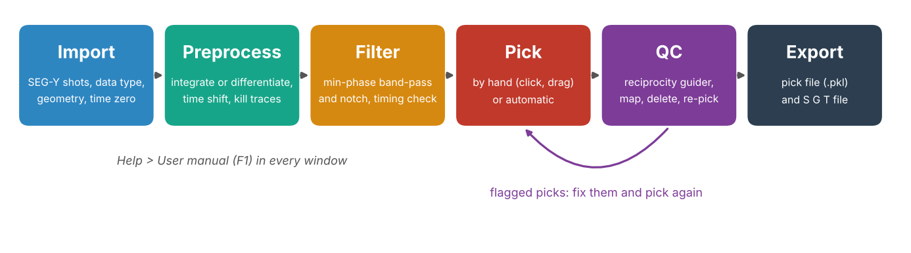
Keep these files, and the manual folder, together in one folder:
| File | What it does |
|---|---|
first_arrival_picker.py | The script you run (Spyder cells): import, preprocessing, filtering, the picking canvas, menus, saving and the SGT export cells. |
data_importer.py | SEG-Y / SU import window, header reading, geometry, spectra, survey geometry window. |
geometry_io.py | Topography tables (csv, txt, xls, xlsx) and writing the geometry into the trace headers (with a backup). |
xdomain.py | The index / offset x axis of the canvas. |
pick_export.py | Export window: S G T (station numbers or x positions) and pyGIMLi files. |
preprocess_designer.py | Integration / differentiation, time shift, mute, normalization, trace kills. |
filter_designer.py | Filter designer (minimum-phase FIR, zero-phase FIR, IIR; notch filters; timing). |
auto_pickers.py | Automatic picking: detectors, onset refinement, post-processing. |
reciprocity_analyzer.py | Reciprocity and pick QC window. |
pick_tools.py | Delete picks dialog, the plotted traces / time axis / gain window, shared gain control. |
help_manual.py | This manual inside the picker (Help menu, F1). |
The figures use a synthetic survey written as ordinary SEG-Y files (SYN_0900_*.segy), so the import runs exactly as on field data:
Python 3 with numpy, scipy, pandas, matplotlib, PyQt5, obspy and pygimli. From v19 pyGIMLi is required: the export checks pyGIMLi files with it, and the inversion tools that follow build on it. Excel topography files need openpyxl (.xlsx) or xlrd (.xls). segypy and bruges are optional (only the legacy cells at the end of the script use them). The picker runs in Spyder or from a terminal.
pyGIMLi installs most reliably with conda into an environment of its own. In the Anaconda Prompt (Windows) or a terminal (Linux, macOS):
conda create -n pg -c gimli -c conda-forge "pygimli>=1.5" conda activate pg conda install -c conda-forge pyqt obspy pandas openpyxl xlrd pip install segypy bruges (optional)
Check the environment with python run_picker.py --check: it lists every library with its version and whether it is required. To use the same environment in Spyder, install spyder-kernels into it (conda install -c conda-forge spyder-kernels) and choose it under Preferences > Python interpreter.
Spyder setting. The canvas must be interactive: Preferences > IPython console > Graphics > Backend = Qt (or run %matplotlib qt), then restart the kernel. With the inline backend the picker prints a warning and cannot take clicks. |
Spyder is not needed. In the folder of the program:
conda activate pg python run_picker.py (import window in the current folder) python run_picker.py D:\Line_101 (... in the folder of the data) python run_picker.py --quantity displacement D:\Line_101 python run_picker.py --record D:\Line_101\picks\S_STACK_0101_displacement_import.json
The import window, shot dialog, picker and every tool window work as in Spyder, and the terminal shows the messages of Spyder's console. --record repeats an earlier import without the window. The program ends when its last window is closed; the picks are saved as you go. The full path also works from any folder: python C:\...\picker\run_picker.py.
AUTO_CONTINUE_TO_PICKER = True).| Variable | Meaning |
|---|---|
USE_IMPORT_DIALOG | True: the import window opens. False: script mode, reads segy_data_path with search_string_for_segy_files and needs DATA_QUANTITY. |
DATA_QUANTITY | 'acceleration', 'velocity' or 'displacement': what the files contain (pre-selects the radio in the window). |
IMPORT_RECORD_FILE | An earlier …_import.json: repeats that import exactly, with no window. |
AUTO_OUTPUT_NAMES | Script mode: name the pick and SGT files from the line name and data type. |
LOAD_EXISTING_PICKS, EXISTING_PICKS_FILE | Script mode: continue from the auto-named pick file, or from a given .pkl or SGT file. |
AUTO_CONTINUE_TO_PICKER | Running only the import cell continues to the shot dialog. |
SEISMIC_FILE_FORMAT | Script mode: 'segy' (.segy / .sgy) or 'su' (Seismic Unix .su). |
RECEIVER_TOPOGRAPHY, SHOT_TOPOGRAPHY | Script mode: a topography table, e.g. dict(path='…/receivers.xlsx', x_col='Easting', y_col='Northing', z_col='Elevation'); y_col='' means x is the distance along the line. number_col (optional) names the receiver or shot number column. |
SHOTS_AT_GEOPHONES | Script mode: True places every shot at the receiver of its position (x, y and elevation from the receivers). |
The import window opens at start-up and from File > Import SEG-Y / SU data…. Work down its groups on the left; the right side shows the files, the geometry and the spectra as they are read.
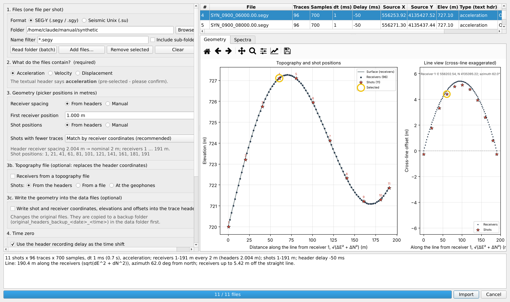
*_stacked.segy), and Include sub-folders. Only files of the chosen format are listed.Choose Acceleration, Velocity or Displacement. When the SEG-Y textual header names one (for example “ACCELERATION (M/S2)”), it is pre-selected and a mismatch is noted. The choice decides which conversions preprocessing offers.
A table of surveyed positions (csv, txt, dat, xls or xlsx) replaces the coordinates and elevations of the headers everywhere: the geometry window, the offset view of the canvas, the export and the header writing. The delimiter (comma, semicolon, tab or spaces) and a header row are detected; Excel files offer their sheets.
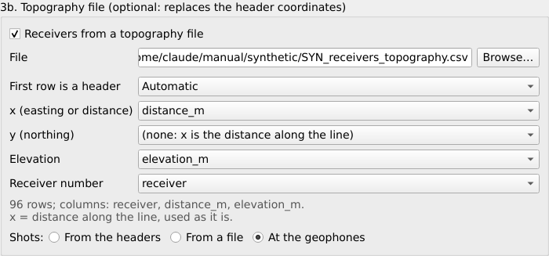
The import record saves the topography choices, so Load import record… and File > Repeat an import repeat them.
Tick Also write the geometry into the trace headers of the data files (in group 3b, or in the topography window, section 4) to store the geometry you imported (for example a topography file) in the files themselves. When you press Import:
original_headers_backup_<date>_<time> in the data folder and checks the copies;Only header bytes change; the samples are never rewritten. With a distance-only topography the headers get x = distance along the line and y = 0. To undo, copy the files back from the backup folder.
Use the header recording delay as the time shift: a delay of −50 ms means the record starts 50 ms before the shot. Preprocessing then advances every trace by 50 ms, so time zero is the shot time.
<line>_<type>_picks.pkl and <line>_<type>_SGT.txt, in a picks folder next to the data (or the output folder you choose). An existing file with that name triggers an overwrite warning..sgt files are read too. The outputs then follow the file you continue.Press Import, or close the window with valid files and a data type, to import. An import record <line>_<type>_import.json is written every time: it lists the files, data type, geometry and outputs. Load import record… fills the window from one.
Figure 4. Spectra tab of the import window: two selected shots in colour, all shots in grey, their average in black, and the share of energy per octave band. The hint names the sharp 200 Hz sensor resonance.
Select shots in the table (Ctrl / Shift for several) to compare their amplitude spectra. Each shot's spectrum is the mean over its traces. The views that look past a sensor resonance are explained in section 15.
The picker works on picker positions: the tape distance (m) of every station as laid out in the field. In the usual layout the first shot is at tape 0 m and the receivers start at 1 m. A 100 m line with 1 m receivers and 10 m shots has receivers at 1, 2 … 100 m and shots at 0, 10, 20 … 100 m. The picks are stored against these positions; the import window derives them from the headers (or from the manual geometry).
The x along the line (m) is the true distance: from the header coordinates or from a topography table. Headers measure it from receiver 1. The picker and the export put x = 0 at tape position 0 m instead. The station at 0 m, usually the first shot, defines x = 0. If no station is at 0 m, x(0) is extrapolated from the two receivers nearest to it. For Line 101 shot 1 is at tape 0 m, 0.976 m before receiver 1. So shot 1 is at x = 0 and receiver 1 at x = 0.976 m, as in SLF_Line_101_topo_0m.txt. The offset view of the canvas, the titles and the export (default Tape origin, section 17) all use this origin.
If your stations are numbered differently (e.g. 101 … 270), choose another x origin in the export window: smallest x at 0 or first receiver at 0.
A topography table (csv, txt, dat, xls or xlsx) replaces the coordinates and elevations of the headers. Choose the columns: x and Elevation are required. With a y column, x and y are map coordinates; without it, x is the distance along the line. Two layouts are read:
| Rows | Meaning |
|---|---|
| One row per receiver (trace) | Row 1 = trace 1, … (or a Receiver number column). Shots are placed from the headers, from a shot file, or at the geophones. |
| One row per station along the tape | Shots and receivers share the table: one row per tape position, e.g. 171 rows for 0, 1 … 170 m (SLF_Line_101_topo_0m.txt). Receivers and shots take the row at their position. The first row is at the smallest shot or receiver position (or the position you type), and the rows are one receiver spacing apart (or the step you type). A Station position column can give the positions instead. A table with as many rows as stations, and a different number from the receivers, is recognised automatically. |
File > Topography… (Ctrl+T), Data > Apply a topography file… or Tools ▾ opens the topography window. The same controls are in group 3b of the import window. The window previews the new elevations and the change of every station's x against the headers. Apply replaces the geometry, and Restore header geometry goes back. Applying again replaces the earlier topography instead of adding to it.
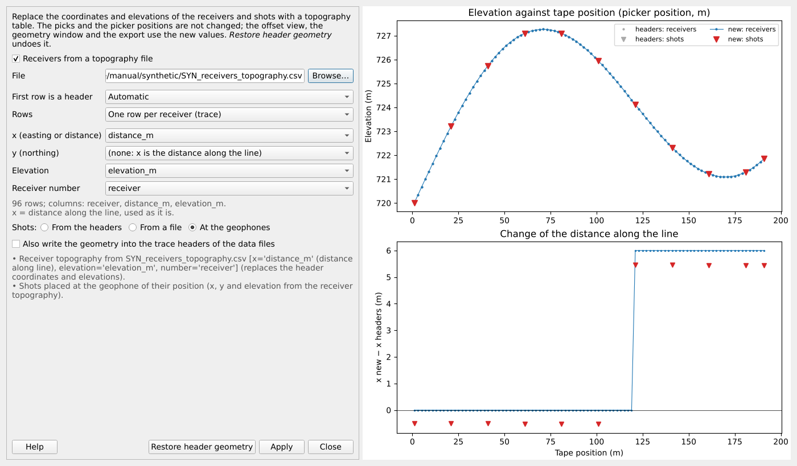
After the import, the shot dialog asks which shot to open (1 to the number of shots, as in the plot title). It also sets the starting gain and the reciprocity guider. From it you can open the filter designer or preprocessing first. Enter submits.

Figure 6. The shot dialog.

Figure 7. The picking canvas: shot 3 of the synthetic survey, filtered acceleration. Menus and toolbar at the top; mode and gain at the top left; display switches on the right; gain slider at the bottom.
| Element | What it does |
|---|---|
| Title | Shot number and position, the quantity shown, and the filter of the filtered view. |
| MODE box | Current mode: Home, Manual Pick, Delete Picks (keys in section 7). |
| DATA TYPE | Original (preprocessed, not filtered) or Filtered. Toggle often: filtered data are easier to read, but the original shows the true onset. |
| DATA POLARITY | Normal or Reverse (flip the wiggles). |
| QUANTITY | Acceleration, velocity or displacement. A grey entry is not computed yet. Clicking it offers to open preprocessing with the conversion ticked. |
| Reciprocity & pick QC | Opens the QC window (section 13). |
| ◀ Prev / Next ▶ | Save the picks and open the neighbouring shot. |
| X AXIS | Index (picker positions) or Offset (true distance along the line): see The x axis: index or offset. Key x switches. |
| GAIN slider | Log scale from 0.1 to 200, with − / + (×1.25) and the mouse wheel over the slider. The zoom is kept. |
| Crosshair | Follows the mouse; the toolbar readout shows receiver, time (ms) and sample. |

Figure 8. The same shot with DATA TYPE = Original: the 200 Hz ringing of the accelerometer resonance hides the first breaks. The filter (section 10) removes it.
Picks are stored against the picker positions: one evenly numbered position per recorded trace (first receiver position + trace number × spacing). The Index view draws the traces at these positions, evenly spaced. Receivers missing on the ground (a road, a creek) do not appear there: their neighbours stand side by side.
The Offset view (X AXIS radio, Traces, axes & gain > X axis, or key x) draws every trace at its true distance along the line, from the headers or the topography file. Irregular spacing is drawn to scale. A gap wider than 1.5 spacings is shaded and labelled No receivers. The axis is labelled Distance along the line (m), the title adds the shot's x, and the readout shows both the distance and the picker position.
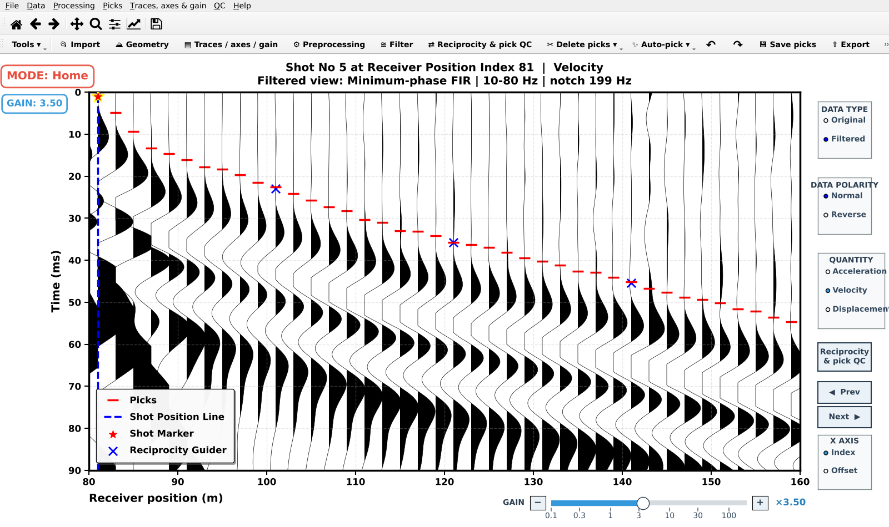
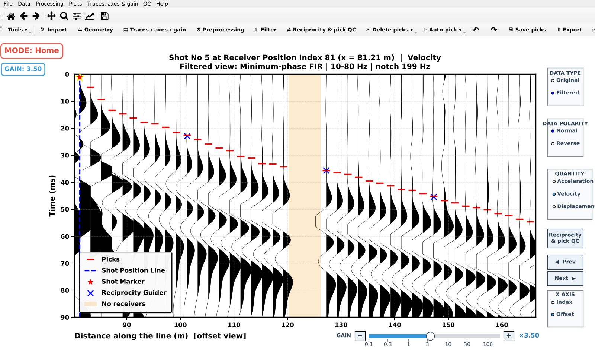
Picking, deleting, zoom and the gain work the same in both views: the view changes only how the x axis is drawn, never the stored picks or the zoom. Around every trace the axis keeps the nominal spacing, so the wiggles keep their shape; the stretch that makes up a gap lies between the two traces.
When other shots are already picked, the canvas marks with a blue ✕ the time each reciprocal pick predicts on this shot. The source of shot B sits at a receiver of shot A, so t(A→B) should equal t(B→A). A pick far from its ✕ deserves a second look. A ✕ appears only where the other shot has a pick within the station match tolerance of this shot's position (set at the top of the reciprocity window, section 13). The nearest such pick is used.
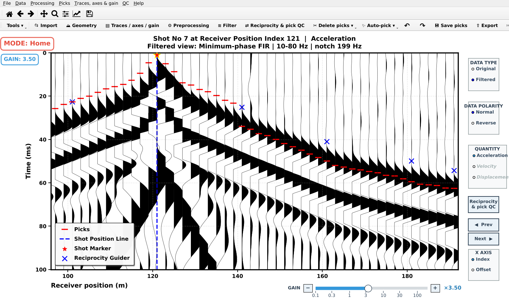

Figure 12. Menu bar, navigation toolbar and the picker toolbar.

Figure 13. Every menu and the two toolbar drop-downs.
| Menu | Contents |
|---|---|
| File | Import SEG-Y / SU data (Ctrl+O), Repeat an import record, Save picks, Topography (Ctrl+T), Export picks for inversion (Ctrl+E), Save canvas image (the export window, section 18), Open the exports folder, Close picker. |
| Data | Survey geometry / topography, Preprocessing, Show quantity. |
| Processing | Filter designer (f). |
| Picks | Undo pick edit (u, Ctrl+Z), Redo pick edit (Ctrl+Y), Delete picks on one receiver, Delete picks in a receiver range, Save picks, Export picks for inversion, Automatic picking (STA/LTA, Undo). |
| Traces, axes & gain | Plotted traces, time axis and gain (Ctrl+D), Plot all traces, Plot trace ranges, Gain submenu, X axis (Index / Offset, key x), Go to the plotted window (h). |
| QC | Reciprocity and pick QC. |
| Help | User manual (F1), Open the PDF manual, Manual sections, Keyboard and mouse shortcuts, About. |
The toolbar repeats the common actions: Tools ▾ (everything in one list), Import, Geometry, Traces / axes / gain, Preprocessing, Filter, Reciprocity & pick QC, Delete picks ▾, Auto-pick ▾, ↶ (undo), ↷ (redo), Save picks, Export and Help.
Help > User manual, the Help button or F1 opens this manual as a side panel of the canvas. Press F1 again to hide it. Drag its title bar to float it as its own window or dock it on the other side.
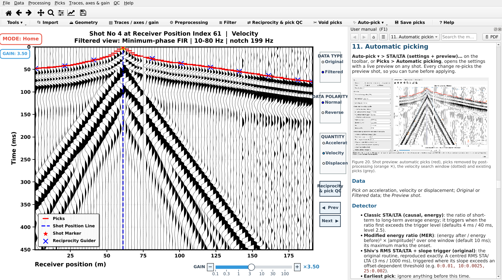
| Key | Mode / action |
|---|---|
| m | Manual Pick. Click: one pick, snapped to the nearest receiver and the nearest sample. Drag with the button held: a pick on every receiver you cross, interpolated between mouse positions (red line). Release and drag again to add strokes. |
| r | Delete Picks. Click two points: every pick between their receivers is removed (yellow dashed line). |
| u, Ctrl+Z / Ctrl+Y | Undo / redo any pick edit (section 11). In Manual Pick, the first u takes back the last click or stroke you have not finished yet. |
| h | Home: finishes the picks and goes back to the plotted window. |
| z / d | Zoom box / pan (drag). Mouse wheel on the gather zooms. |
| s | Save picks to the pick file. |
| n | Save and choose another shot. |
| g | Type a gain value. |
New picks are kept as pending until you switch mode, save, change shot or press h. Then they are merged into the shot's picks: a new pick replaces the old one on the same receiver. Picks outside the plotted time range are rejected.

Figure 15. Manual Pick: a drag stroke across the first break of shot 3 (red line), not yet finished.
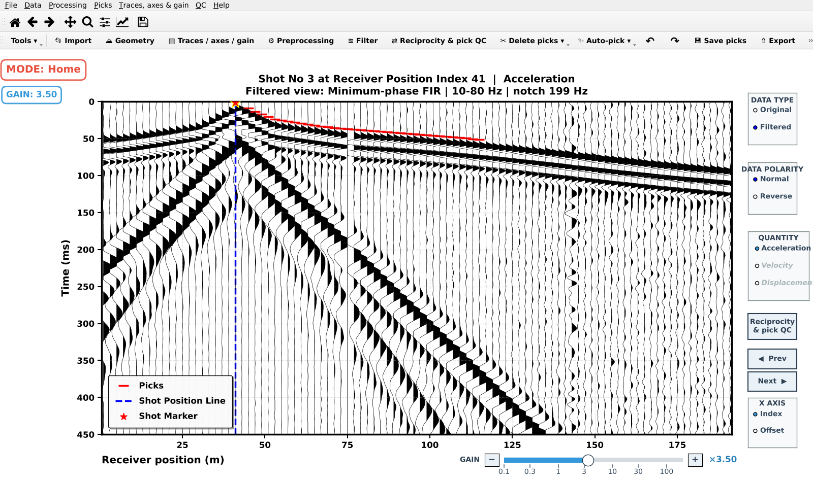
| Where to pick. Pick the first departure from the background, not the first peak. Every causal (minimum-phase) filter delays energy slightly. The filter designer reports the delay on your data (section 10); toggle to Original to check a difficult pick. |
Traces, axes & gain > Plotted traces, time axis and gain… (Ctrl+D, or Traces / axes / gain on the toolbar) sets what the canvas plots.
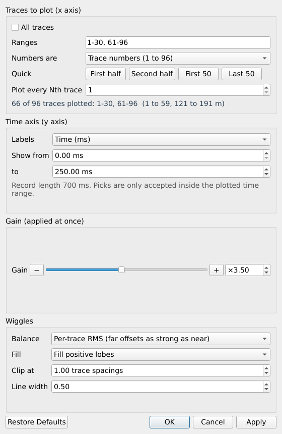
1-100 or 1-20, 50-60, as trace numbers or receiver positions in metres. Traces in the gaps are not drawn and their space stays empty. Quick buttons pick halves or the first or last 50. Plot every Nth trace thins the selection (picks still show on every receiver). The line below counts the plotted traces; a range outside the gather is refused.The menu also has Plot all traces, Plot trace ranges… and a Gain submenu (×1.25, ÷1.25, set, presets ×1 / ×3.5 / ×10 / ×30).

Figure 18. The canvas with traces 1–30 and 61–96: the gap stays empty.
Data > Preprocessing… (also in the shot dialog) prepares the data before filtering and picking:

Figure 19. Spectra before and after integration with the low-cut after each step, and the realized filter response.

Figure 20. Data preview of acceleration, velocity and displacement for one shot. Click a trace to kill it.
OK processes all shots; the QUANTITY switch on the canvas then offers all three quantities.
Processing > Filter designer… (key f) designs the filter of the Filtered view. It runs on the active quantity, and before the time shift: the shift is undone, the data filtered, and the shift re-applied, so filter transients stay before time zero.
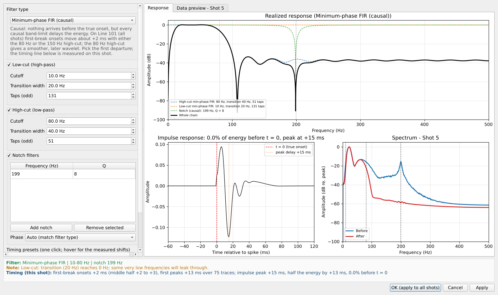
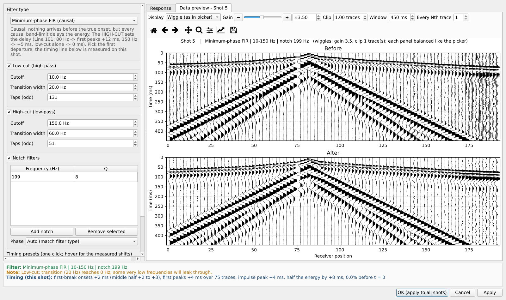
The filter designer, the preprocessing window and the auto-pick preview share one gain control:
Both only change the display; the zoom stays. The Traces, axes & gain window has the same pair and drives the canvas.
There are four ways to delete picks, and every one of them can be undone:
21-40 or 21-40, 55-60, 83 (both ends included), or positions in metres.In the dialog choose This shot only or ALL shots; it counts the picks before you delete them, and refuses a range outside the line. The pick file is saved after each delete.
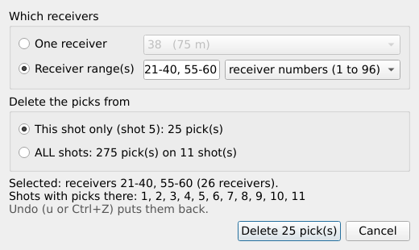
One history holds every pick edit of the session:
u or Ctrl+Z (or ↶ on the toolbar, Picks > Undo pick edit) takes the last edit back. Ctrl+Y (↷) puts it back. The zoom stays and the pick file follows each step.
In Manual Pick mode, picks you have not finished yet (before h, another mode, saving or another shot) are undone one click or one drag stroke at a time. Once finished, all the picks of that round are one edit.
| Mouse wheel while picking. While the mouse button is held in Manual Pick or Delete Picks mode, the wheel does not zoom. Zooming in the middle of a drag used to sweep a stroke across the whole shot. Release the button, then zoom. |
Auto-pick ▾ > STA/LTA (settings + preview)… on the toolbar, or Picks > Automatic picking, opens the settings with a live preview on any shot. Every change re-picks the preview shot, so you can tune before applying.

Figure 24. Shot preview: automatic picks (red), picks removed by post-processing (orange ✕), the velocity search window (dotted) and existing picks (grey).
Pick on acceleration, velocity or displacement; Original or Filtered data; the Preview shot.
0:0.01, 10:0.0025, 25:0.002).
Figure 25. Picks vs offset: detector picks, the ones each step removed, and the polynomial fits on each side of the source.
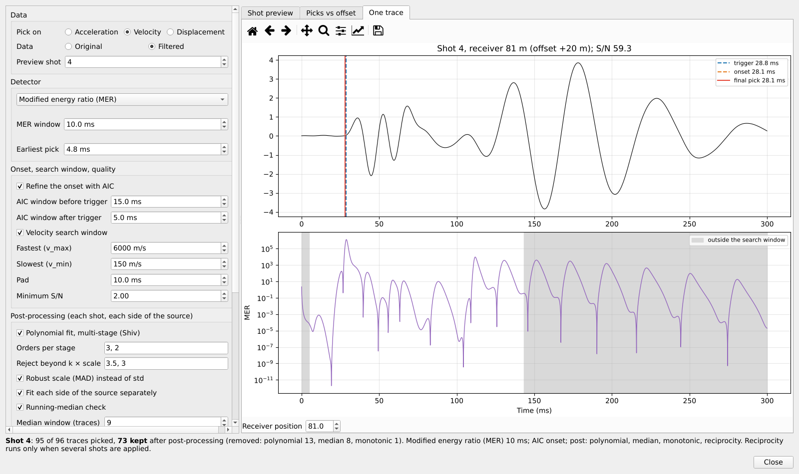
2-10.
Figure 27. Automatic picks (MER, velocity, filtered) on the canvas. They are ordinary picks: edit, delete or re-pick them by hand.
Because the example survey has known first-arrival times, the detectors can be scored. All results use velocity, filtered with the default 10–80 Hz filter, with the default post-processing on all 11 shots (1056 receiver–shot pairs). The error is pick minus true time.
| Detector (velocity, filtered) | Picks kept | Median error | 90 % of |error| below |
|---|---|---|---|
| Classic STA/LTA, defaults | 521 | +3.2 ms | 5.7 ms |
| Classic STA/LTA, trigger level 4 | 797 | +3.8 ms | 5.2 ms |
| MER, defaults | 809 | +3.5 ms | 4.7 ms |
| Shiv's original | 353 | +3.0 ms | 7.3 ms |
QC > Reciprocity and pick QC… (or the button on the canvas) opens a live window. It updates as you pick, so you can keep it on a second screen.
A shot and a receiver count as the same station when they are at most this far apart. The tolerance decides which shot pairs are reciprocal (Δt, the checkerboard, the flags) and where the blue ✕ marks of the reciprocity guider appear on the canvas. A short explanation sits under the top bar of the window.
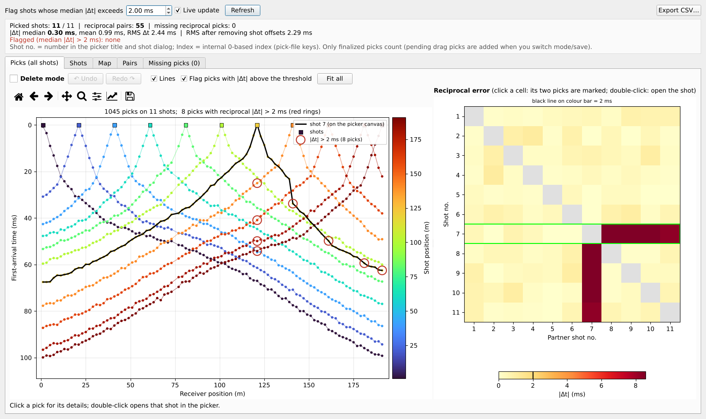
| Tab | What it shows |
|---|---|
| Picks (all shots) | All picks; flags; click a pick for its details; double-click opens that shot in the picker. Lines joins each shot's picks. Fit all resets the view. |
| Shots | Per shot: picks, pairs, median / mean / max |Δt|, bias, the robust (Huber) time offset, the residual after it, the count above the threshold, the status and the reason. |
| Map | The shot-by-shot map of the reciprocal error (click a cell: both picks are marked; double-click opens the shot) and the median per shot. |
| Pairs | Every reciprocal pair, worst first. |
| Missing picks | Pairs where one of the two picks is missing. |

Figure 29. Map tab. Shot 7 has the largest errors against shots 8–11.
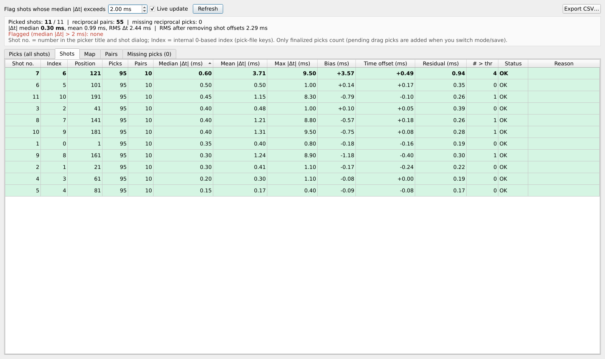
Tick Delete mode:
Then open the shot (double-click) and pick the deleted receivers again. Export CSV… saves the tables.
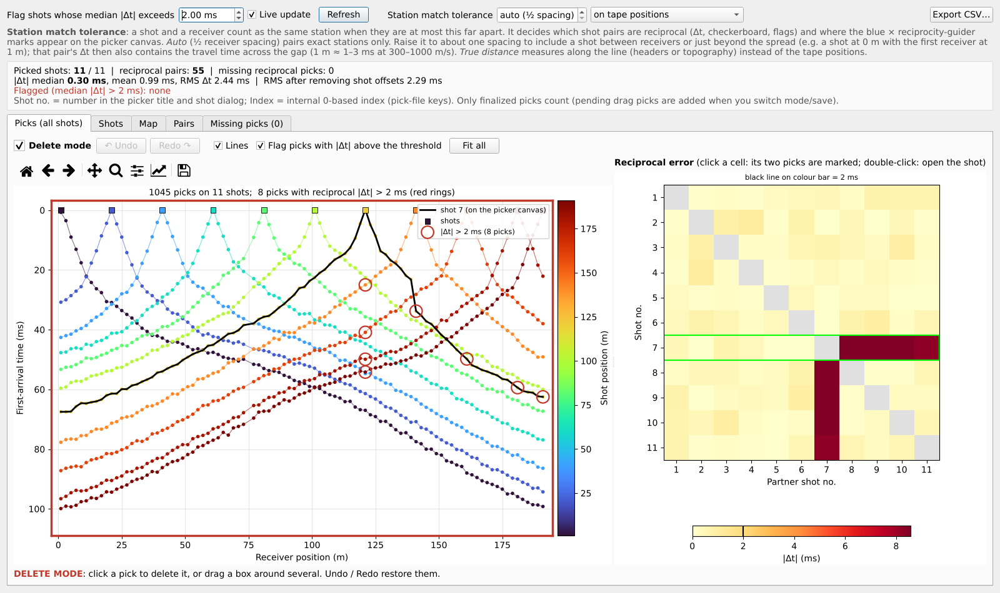
Data > Survey geometry / topography… (toolbar Geometry) shows the line as imported:
Double-click a shot to open it in the picker.

Figure 32. Survey geometry of the example: all shots picked (green), shot 7 on the canvas (ringed).
Accelerometers and geophones shape what they record. A lightly damped resonance can hold most of the recorded energy and squash the rest of the spectrum. The Spectra tabs of the import and geometry windows have three views:
Leave out of the scaling takes a band (e.g. 184–216 Hz) out of the peak scaling, the dB reference and the energy shares; the band is still drawn, shaded.

Figure 33. Raw: the 200 Hz resonance dominates (54 % of the energy is in the 160–320 Hz band).
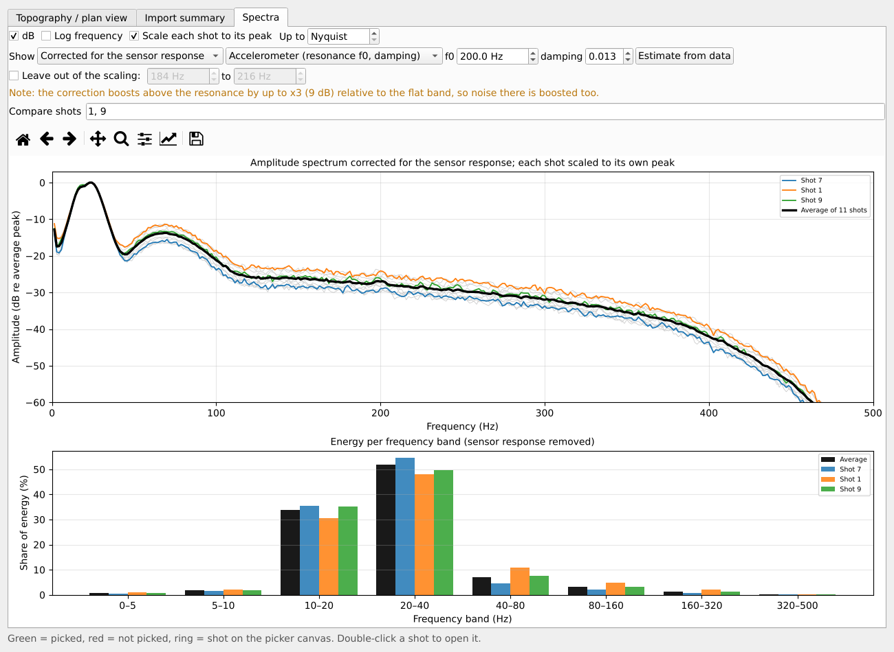
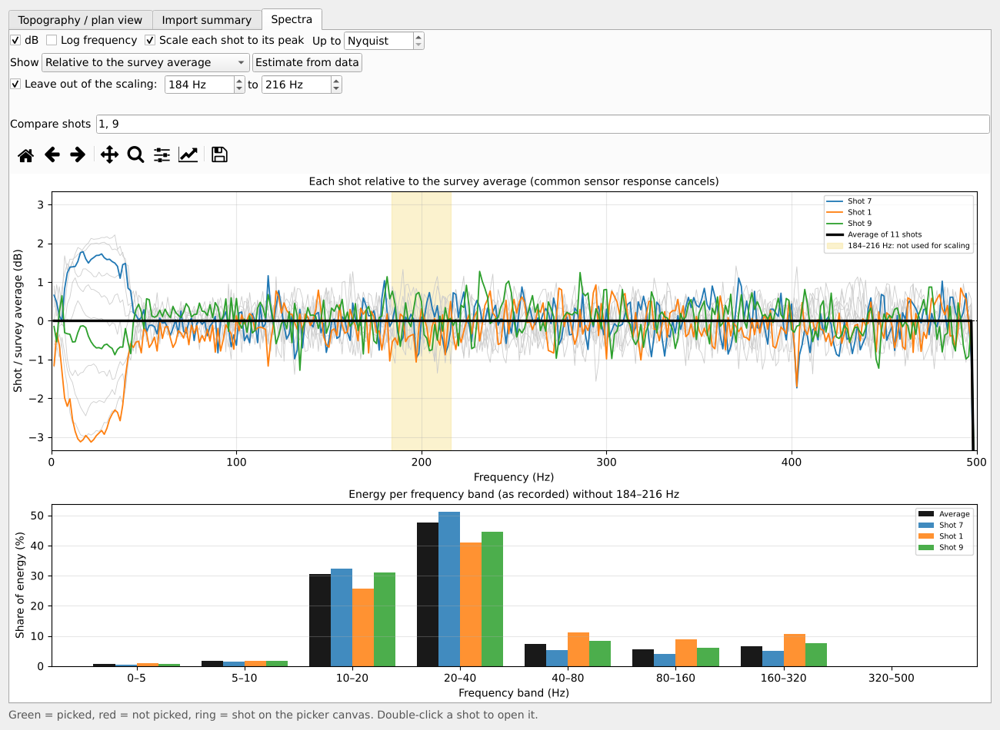
| File | Contents |
|---|---|
<line>_<type>_picks.pkl | The picks: final_picks (per shot, an array of [receiver position, time sample at 0.1 ms]), the clicked points, and metadata (data type, preprocessing, filter, geometry, import record, last auto-pick settings). Written by s, Save picks, Prev/Next, every QC edit and every auto-pick. |
<line>_<type>_sessions/ | Session backups of the pick file (see below). |
<line>_exports/ | Everything the program exports for this line (v19): figures in sub-folders, the export window's files, the reciprocity reports and the classic SGT file. |
<line>_exports/<line>_<type>_SGT.txt | The classic export: one row per pick, S G T, written by the end-of-session cells. |
<line>_exports/<line>_SGT_stations.txt, …_SGT_xpositions.csv, …_pygimli.txt | Default names of the export window (section 17), with the companion topography and line-end files. |
original_headers_backup_<date>_<time>/ | Copies of the data files made before the geometry is written into their headers (section 3c). |
<line>_<type>_import.json | The import record (files, data type, geometry, outputs). |
<line>_exports/shots/shot_<nnn>/…png | Canvas images (Ctrl+S, or File > Save canvas image with the export window; section 18). |
A typical picks folder after a few sessions:
picks/
SLF_101_displacement_picks.pkl the picks (working file)
SLF_101_displacement_import.json the import record
SLF_101_displacement_sessions/ one backup per session
SLF_101_displacement_session_20261124_093015.pkl
SLF_101_displacement_session_20261126_141002.pkl
SLF_101_exports/
SLF_101_SGT_xpositions.csv SLF_101_pygimli.txt SLF_101_pygimli_topo.txt ...
shots/shot_012/ reciprocity/ filters/ preprocessing/ sessions/ ...
reciprocity_analysis/
Every picking session leaves one backup of the pick file in <line>_<type>_sessions/, named by the time the session started and refreshed at every save, so it always holds that session's final picks. When a session starts on a pick file whose picks are not backed up yet (for example picks made with v18), they are backed up first. The 50 most recent backups are kept.
When you import data whose pick file already has picks, the window Continue a picking session? opens (Figure 2b):
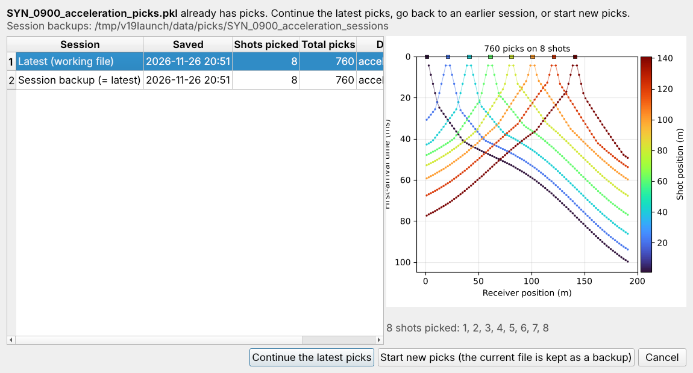
The export window (section 17) replaces these cells; they are kept for scripts that use them. After picking, run the cells below End of the picking session one at a time. They:
The columns are:
The first rows for the example survey (true times) would be:
1.000000 1.000000 0.000000 1.000000 3.000000 0.004400 1.000000 5.000000 0.008900 ...
The import reads such a file back (and detects the convention), so you can continue picking from an exported SGT.
File > Export picks for inversion… (Ctrl+E), Export on the toolbar (beside Save picks), or Tools ▾ opens the export window. Unfinished clicks or strokes on the canvas are finished first. The window shows the file as it will be written, updates the preview with every change, and lists what it left out and why.
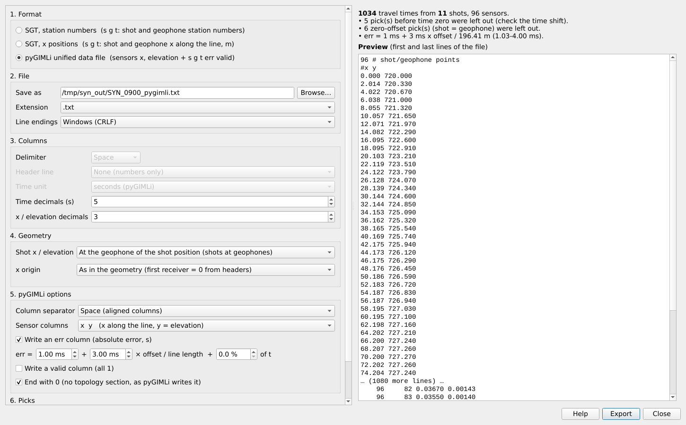
| Format | Columns | Files |
|---|---|---|
| S G T, station numbers | s g t: s = station number of the geophone the shot was fired at; g = station number of the geophone; t = first-arrival time. Numbers count along the receiver grid from the first station (shot or receiver) = 1. For Line 101 (shot 1 one metre before receiver 1) this gives shot 1 = 1, receiver 1 = 2, …, the convention of the earlier exports and of pyGIMLi. | .txt or .csv, any delimiter |
| S G T, x positions | s g t: s and g are the x of the shot and the geophone along the 2D line in metres (from the headers or the topography file), t the time. Shots need not sit on geophones. | .txt or .csv, any delimiter |
| pyGIMLi data file | The pyGIMLi unified data format (see below): a table of sensor positions, then s g t with s and g pointing into that table, plus optional err and valid. | .txt or .dat, space or tab |
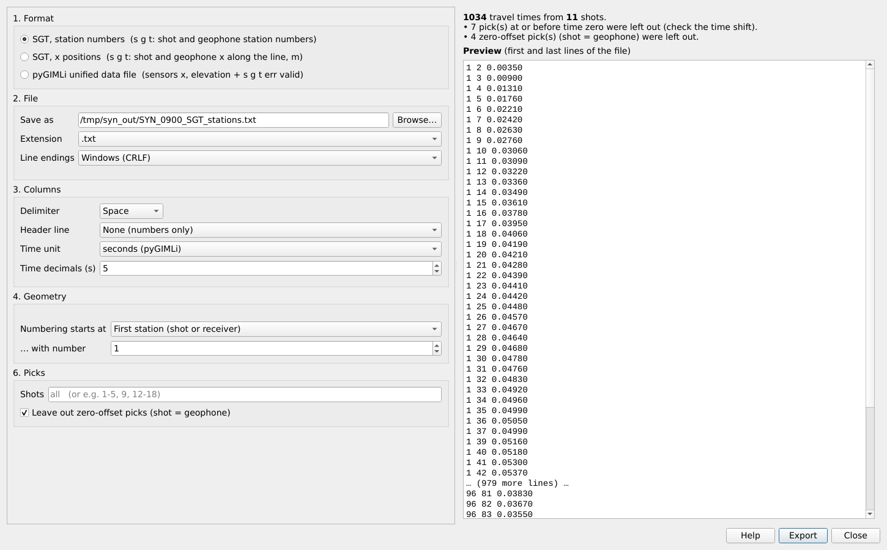
The start and end of the file for the example survey (true travel times; 96 sensors, because every shot is at a receiver):
96 # shot/geophone points
#x y
0.000 720.000
2.014 720.330
4.022 720.670
...
1045 # measurements
#s g t err
1 2 0.00440 0.00103
1 3 0.00890 0.00106
...
96 95 0.00440 0.00103
0
#s g t err valid. s and g are row numbers of the sensor table, counted from 1 (pyGIMLi counts from 0 internally and converts). t is in seconds.convertPicks2Gimli. The defaults (1 ms + 3 ms × offset / line length) are the script's minError = 0.001 and maxError = 0.003: 1 ms at zero offset, 4 ms at the far end.0 says there is no topology section, as pyGIMLi writes its own files.Load it with pg.load(file), pg.DataContainer(file, 's g') or TravelTimeManager(file).
| Option | Meaning |
|---|---|
| Delimiter | Space, tab, comma, semicolon, or any other string that is not part of a number. Choosing .csv switches a space to a comma. |
| Header line | None, column names (s,g,t, skipped by np.loadtxt(…, skiprows=1)), or a # comment line (skipped automatically by most readers). |
| Time unit, decimals | Seconds (pyGIMLi) or milliseconds for the S G T formats. Picks are 0.1 ms apart, so 4 decimals in seconds are exact; 5 is the default. |
| Shot x / elevation | At the geophone of the shot position (default): a shot fired at a geophone uses that geophone's x and elevation, so both are one sensor. At the surveyed shot coordinates: every shot keeps its own x and elevation; one closer than the tolerance to a geophone shares its row. |
| x origin | Tape origin (default): x = 0 at tape position 0 m, normally the first shot (section 4). Or: as in the geometry (the first receiver is at 0 when the distances come from the headers), the smallest x at 0, or the first receiver at 0. |
| Companion files | <name>_topo.txt: x and elevation of every sensor, the topography file of the inversion script (same x as the export). <name>_line_ends.txt: map coordinates of x = 0 (SoL) and of the end of the line (EoL) on the straight line through the receivers, for placing the inversion results on the map; written only when map coordinates are known. |
| Numbering starts at | Station numbers: the first station (shot or receiver) or the first receiver, with the number you choose (1 by default). |
| Shots | All, or a list such as 1-5, 9. |
| Zero offset | Picks at shot = geophone are left out by default (their time is 0). |
| Line endings | Windows (CRLF) or Unix (LF). |
Picks at or before time zero (t ≤ 0, which pyGIMLi cannot use) and picks that are not on a receiver position are left out and counted in the summary. Repeated shot–geophone pairs (repeat shots at one station) are kept and counted.
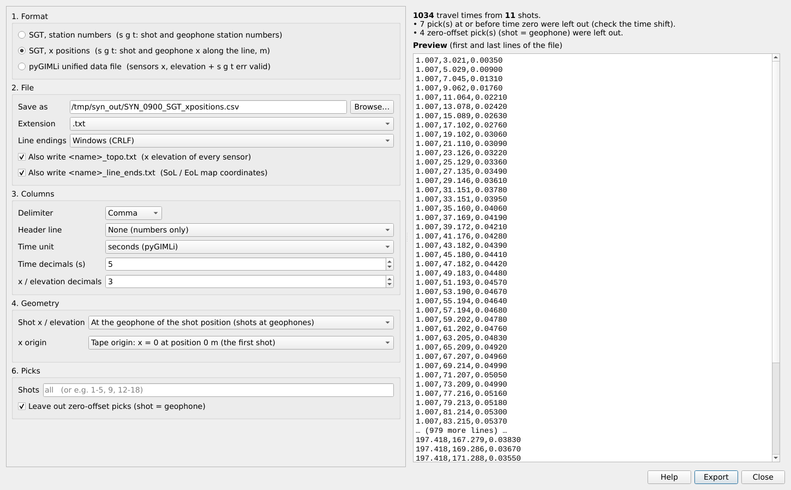
After writing, the window reads the file back and compares it with what it meant to write: S G T files with numpy.loadtxt, pyGIMLi files with pyGIMLi itself when it is installed (otherwise with a built-in reader of the same format). The result is shown under the preview and printed in the console. The file is first written under a temporary name and renamed when complete, so an interrupted export never leaves half a file.
Checked against the inversion script. With SLF_Line_101_topo_0m.txt applied as a station table, the x-position export of the same picks reproduces SLF_Line_101_picks_V2.txt exactly (2301 rows), and the companion _topo.txt reproduces the topography file. The pyGIMLi export equals what convertPicks2Gimli(picks, topo, 0.001, 0.003) of StreamLineInversion_SLF_Line_101.py writes: the same sensors, s, g, t and err. From the headers alone, x agrees within 0.2 mm and the elevation of shot 1 differs by 5 cm (692.80 m in the header, 692.75 m in the file).Two things about the script itself. convertPicks2Gimli writes the last pick of the file twice: the file ends with a newline, and for that empty line the check that appends a pick still runs with the previous values. Moving the if tPick > 0 and xPick != sPick: block inside if tmpString != '': fixes it. And np.row_stack no longer exists in recent NumPy 2 releases; np.vstack does the same. |
Earlier Line 101 pyGIMLi file. Exported from the same picks, all three formats give exactly the same 2302 s–g–t rows as SLF_line_101_gimliInput.txt. The sensor table differs: that file gave sensor k the coordinates of receiver k, while its data used k = position + 1. So every sensor sat one station (about 1 m) along the line from its true place, and each elevation was paired with the neighbouring station. The offsets were nearly the same. The export writes every sensor at its own surveyed position, as SLF_Line_101_topo_0m.txt does. |
Every plot has ⤓ Export at the right end of its toolbar: the picking canvas, the reciprocity map, Picks (all shots) and the checkerboard, the filter response and before / after preview, the preprocessing spectra and preview, the auto-pick previews, the import, geometry and spectra plots, and the session window. The export window is the same as FWI Studio's:
| Field | Meaning |
|---|---|
| Prefix | Start of every file name, by default the line name (e.g. SLF_101); remembered for the line. |
| Name | Proposed from the window (e.g. shot_012_displacement, reciprocity_map, filter_response). |
| Format | png, tiff (LZW) or jpg: pixels at the chosen dpi; pdf, svg or eps: vector, sharp at any zoom (svg opens in Inkscape or Illustrator for labels). |
| Resolution | 300 dpi for journal figures, 600 dpi for line art; 150 dpi is enough for slides. |
| Size | As on screen, single column (8.5 cm), 1.5 column (12 cm), double column (17.5 cm), slide (25 cm), full 16:9 slide (33.9 × 19 cm) or custom; the height follows the on-screen shape unless you untick it. |
| Font scale, Line width | All text, or all lines and markers, × this factor in the file only. |
| Options | Transparent background (slides with a coloured background); crop white margins; main plot only (the picking canvas without its buttons, sliders and MODE / GAIN boxes); also save a PDF copy. |
The figure is drawn again at the chosen size for the file; the window keeps its own size and look. Text keeps its point size, so on a page smaller than the screen it takes more room: for a single column use a font scale of about 0.6–0.8, for slides about 1.2–1.6. Journals usually ask for 7–10 pt at the final size.
Files go to the line's exports folder, one sub-folder per kind of figure: shots/shot_012/, reciprocity/, filters/, preprocessing/, autopick/, import/, geometry/, sessions/. An existing file is replaced only after you confirm. Ctrl+S on the canvas saves it at once with the last settings (main plot only) into shots/shot_<nnn>/, adding a number instead of overwriting.
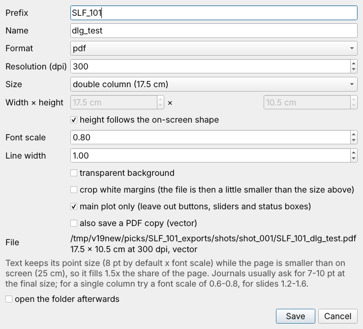
| Key / mouse | Action |
|---|---|
| m | Manual Pick (click / drag) |
| r | Delete picks between two clicks |
| u, Ctrl+Z | Undo the last pick edit (in Manual Pick: the last unfinished click or stroke first) |
| Ctrl+Y | Redo |
| h | Home: finish picks, go to the plotted window |
| z, d | Zoom box, pan |
| g | Type a gain |
| s | Save picks |
| n | Save and choose a shot |
| f | Filter designer |
| x | X axis: index ↔ offset (distance along the line) |
| Ctrl+E | Export picks for inversion |
| Ctrl+T | Topography (apply a topography file) |
| Ctrl+S | Save the canvas as an image into the exports folder (last export settings) |
| Ctrl+O | Import SEG-Y / SU data |
| Ctrl+D | Plotted traces, time axis and gain |
| F1 | User manual (in any window: help for that window) |
| Wheel on the gather | Zoom |
| Wheel on the gain slider | Gain ×/÷ 1.25 |
| Ctrl + wheel in a preview | Gain of that preview |
| Ctrl+Z / Ctrl+Y (QC window) | Undo / redo deletes |
| Symptom | Cause and fix |
|---|---|
| The canvas does not react to clicks; a warning about the inline backend. | Set Spyder's graphics backend to Qt and restart the kernel (section 2). |
| “Rejected pick … out of sample range”. | The pick is outside the plotted time window; widen it (Ctrl+D). |
| A quantity is grey on the canvas. | Not computed yet: accept the prompt, tick Compute acceleration, velocity AND displacement in preprocessing. |
| Import refuses a file. | Different sample interval, or unreadable SEG-Y. The table says which; remove it and import the rest. |
| An SGT file is refused when continuing. | It does not match the imported geometry (less than 90 % of rows fit). Check that it belongs to these files and this geometry. |
| Automatic picking keeps few picks. | Try MER or a higher trigger level, check the velocity window, and look at Picks vs offset to see which step removes them (section 12). |
| Picks look a few ms late on filtered data. | Filter delay: see the timing line in the filter designer; try Wider band or No high-cut, and check on Original. |
| A topography file is refused. | The message under the geometry names the reason: a column that is not a number, a different number of rows than traces / shots (add a number column), a number used twice, or map coordinates for the shots with distances for the receivers. |
| The Offset radio is grey. | There are no receiver distances along the line (no header coordinates and no topography file), or they are not in order. Import a topography file. |
| pyGIMLi complains about sensors at the same position. | Two sensors share an x (the export summary warns). Check the topography, or use At the geophone of the shot position. |
| Help says the manual was not found. | Keep the manual folder (manual.html, images, PDF) next to the .py files. |
| Version | Main changes |
|---|---|
| v1–v4 | Filters merged (minimum-phase FIR, zero-phase FIR, IIR), balanced wiggles, filter designer with live preview, resampling ×10 for picking. |
| v5 | Live reciprocity window with robust shot offsets and flags. |
| v6–v7 | Preprocessing window, quantity switch, menus and toolbar, log gain slider to 200, deleting picks on a receiver, Prev / Next. |
| v8–v9 | SEG-Y import window (headers, geometry, time zero, automatic names, import record), continuing from .pkl or SGT, filter timing presets. |
| v10 | Display settings, time axis in ms, Reciprocity and pick QC with all picks, delete mode, undo / redo. |
| v11 | Automatic picking (STA/LTA, MER, original routine; AIC; post-processing) with live preview; shot spectra. |
| v12 | File menu with import from the picker; trace ranges; gain in every preview; spectra corrected for the sensor response. |
| v13 | This manual: built into the picker (Help menu, F1, side panel) and as a PDF. |
| v19 | ⤓ Export on every plot (FWI Studio's export window: prefix, sizes in cm, dpi, font and line scale, png / tiff / pdf / svg / eps, main plot only). One exports folder per line (<line>_exports) for figures, the export window's files, reports and the SGT file. Session backups of the pick file and the Continue a picking session? window with all picks of each session. Start from a terminal or the Anaconda Prompt (python run_picker.py); pyGIMLi is required; segypy and bruges optional. |
| v18 | Topography at any time (File > Topography, Ctrl+T; Data; Tools) without moving picks, with preview and restore. Station tables: one row per tape station, shots and receivers together (recognised automatically). x = 0 at tape position 0 m (the first shot) in the offset view and the export. Export: companion topography and line-end files; err line length = shot span and t ≤ 0 left out, as in convertPicks2Gimli; checked against that script. Reciprocity: station match tolerance in the QC window, shared with the canvas guider; the guider uses the pick at the shot, not the first within 1 m; shots without a receiver are hatched on the checkerboard. |
| v17 | Export window (S G T with station numbers or x positions, any delimiter; pyGIMLi data files with err / valid; checked after writing). Seismic Unix (.su) import. Topography files (csv, txt, xls, xlsx) for receivers and shots, or shots at the geophones. Writing the geometry into the trace headers with a backup. Index / offset x axis on the canvas. |
| v16 | One undo / redo history for every pick edit (u, Ctrl+Z / Ctrl+Y; unfinished strokes one at a time); no wheel zoom while dragging; “Delete picks” everywhere (was “void”); fix: a second delete range no longer fails. |
| v15 | Polarity switch beside every preview gain; Delete-mode zoom fixes (r no longer jumps to an old view, no flash after deleting); delete picks in typed receiver ranges; larger MODE / GAIN boxes and legend. |
| v14 | Default filter back to the original configuration (minimum-phase 10–80 Hz, notch 199 Hz); 10–150 Hz kept as the Wider band preset. |
Built 26 November 2026. The same text is in First_Arrival_Picker_User_Manual.pdf.